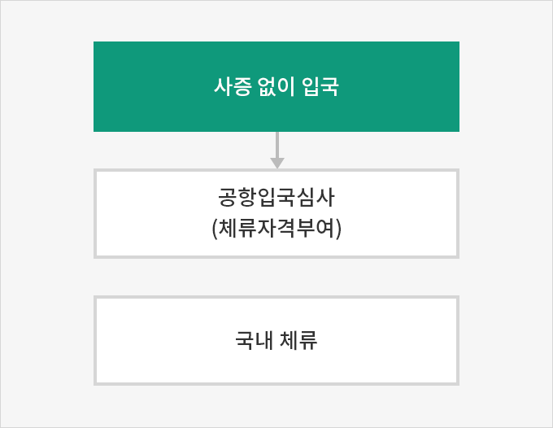
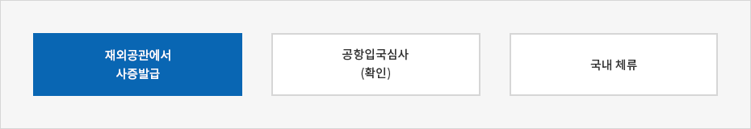
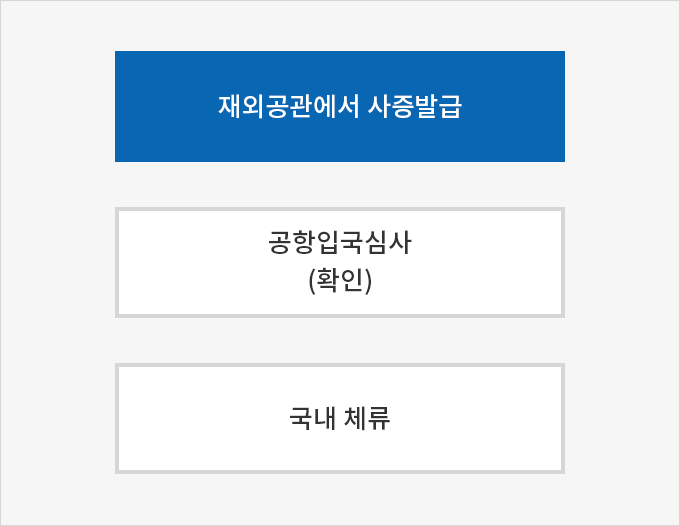
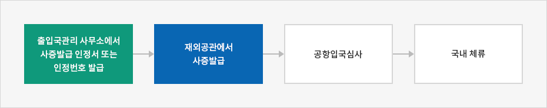
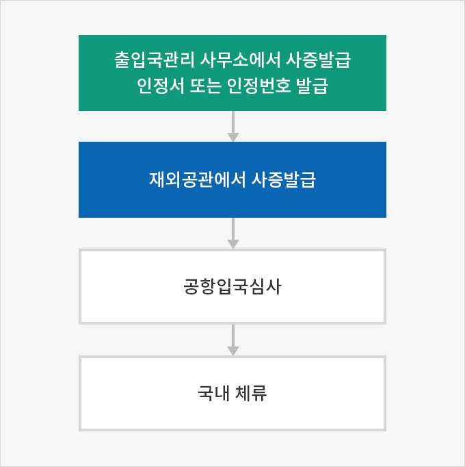

입국
- Home
- 투자의 시작
- 비자·체류
- 입국
대한민국에 입국하는 방법은 아래와 같이 세 가지가 있다.
사증 없이 입국하여 출입국 공항에서 입국심사 시 체류자격 및 기간을 부여받아 입구하는 방법


- 사증 없이 입국
- 공항입국심사(체류자격부여)
- 국내 체류

재외공관에서 사증을 발급받아 입국하는 방법


- 재외공관에서 사증발급
- 공항입국심사 (확인)
- 국내 체류

사증발급권한이 재외공관장에게 위임되지 않은 경우
사전에 초청자의 주소지를 관할하는 출입국관리사무소에서 사증발급 인정서(또는 인정번호)를 발급받아 재외공관에 제시하고 사증을 받아 입국하는 방법


- 출입국관리 사무소에서 사증발급 인정서 또는 인정번호 발급
- 재외공관에서 사증발급
- 공항입국심사
- 국내 체류